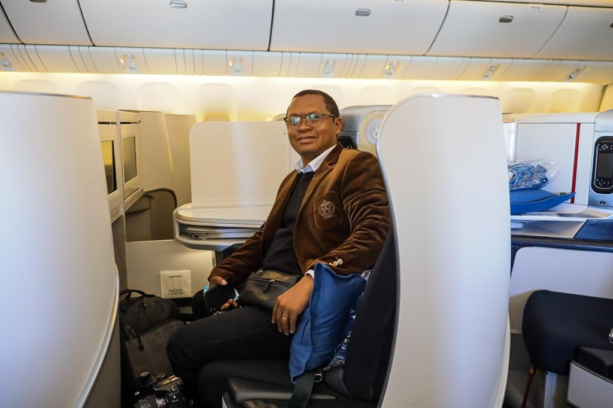

Réalisateur audiovisuel & designer 3D
Hery Rasolofoarimanana
Réalisateur audiovisuel • Designer 3D • Concepteur créatif
25 ans à mettre en images les idées, les marques et les institutions — entre Antananarivo et Nosy Be, Madagascar. Fondateur de Kopenao, agence de communication et de création audiovisuelle.

À propos
Qui je suis
Réalisateur audiovisuel, designer 3D et concepteur créatif malgache, je cumule plus de 25 années d'expérience dans l'audiovisuel : réalisation, montage, habillage TV, design 2D/3D et direction de production. J'ai notamment exercé comme réalisateur vidéo officiel auprès du Cabinet du Président de la République de Madagascar, et dirigé la production de plusieurs stations audiovisuelles nationales.
En 2025, j'ai fondé Kopenao, une agence de communication et de création audiovisuelle basée à Madagascar, à travers laquelle j'accompagne institutions, marques et événements dans la conception et la réalisation de contenus vidéo et 3D à fort impact.
Langues
- Français C1
- Anglais A2
- Malagasy Natif
Centres d'intérêt
- Tendances
- Création 3D
- Voyages
- Sport
Logiciels & outils
Antananarivo & Nosy Be — disponible pour missions sur toute l'île et à l'international.
Expérience
Parcours professionnel
-
2025 — Aujourd'hui
Fondateur & Directeur Créatif — Kopenao
Agence de communication et de création audiovisuelle. Direction artistique et supervision de production pour des clients institutionnels et privés : films de marque, contenus de communication corporate, design 3D et couverture d'événements — de la conception du concept créatif jusqu'à la livraison finale.
Outils Premiere Pro DaVinci Resolve After Effects Illustrator Photoshop 3ds Max Cinema 4D Blender -
2019 — 2025
Chargé de mission — Cabinet du Président de la République
Producteur cameraman et réalisateur vidéo officiel pour la République de Madagascar. Couverture audiovisuelle des déplacements présidentiels, cérémonies d'État et événements institutionnels, de la prise de vue au montage final, dans le respect des exigences protocolaires et des délais de diffusion.
Outils Premiere Pro DaVinci Resolve Photoshop -
2016 — Aujourd'hui
Responsable de production & Réalisateur — Station VIVA
Responsable de production et réalisateur d'émissions au sein de la station audiovisuelle VIVA. Planification des tournages, direction technique des équipes, réalisation plateau et supervision du montage et de l'habillage graphique des programmes diffusés.
Outils Premiere Pro After Effects Illustrator -
2014 — 2016
Video Manager — Hôtel Andilana Beach, Nosy Be
Conception et production de contenus vidéo et photo promotionnels pour l'établissement. Hôtel lauréat des World Travel Awards 2016 — World's Leading Beach Resort.
Outils Premiere Pro Photoshop -
2008 — 2014
Directeur de Production — Viva Télévision
Infographiste, monteur vidéo, réalisateur, designer 2D/3D. Supervision de l'ensemble de la chaîne de production télévisuelle : conception graphique, montage, réalisation et création de designs 2D/3D pour l'habillage antenne et les contenus de la station.
Outils Premiere Pro After Effects Illustrator 3ds Max Cinema 4D -
2007 — 2008
Réalisateur, Infographiste & Monteur vidéo — Graphixlab RTA
Pour l'émission matinale « Dite sa Café ». Réalisation, conception graphique et montage de l'émission, de la préparation du tournage jusqu'à la diffusion quotidienne.
Outils Premiere Pro Illustrator After Effects -
2002 — 2007
Responsable Monteur Vidéo & Habillage TV — Station Radio Télé MBS
Nommé par le consultant américain Jon Alan Petrovich, ancien Vice-Président de CNN. Responsable du montage vidéo et de l'habillage graphique de la chaîne, dans le cadre d'un programme de modernisation technique et éditoriale de la station.
Outils Premiere Pro Illustrator -
2000 — 2002
Monteur & Régisseur — Radio Télévision Record
Montage des programmes et régie plateau lors des tournages et diffusions en direct.
Outils Premiere Pro -
Avril 1999 — 2000
Responsable technique — Agence TV Match
Agence de communication, créateur d'événements. Gestion technique de la production audiovisuelle pour des événements et campagnes de communication : captation, éclairage et son sur le terrain.
-
1997 — 1999
Chef de section technique — Océanie Télévision (OTV)
Encadrement de l'équipe technique de la chaîne : maintenance des équipements, régie et support technique aux tournages et diffusions.
Formation
Formation & diplômes
Formation technique et professionnelle
-
2006
Formation en production télévisuelle
Spécialisée en montage et réalisation, auprès d'Anja Bombelli, experte suisse du cinéma.
-
1998–1999
Diplôme de Technicien Supérieur en Électronique Télévision
Eurelec
-
1997–1998
Attestation en Électronique Télévision
Technimad
-
1995–1996
Brevet de Technicien en Radio Récepteur-Émetteur
Eurelec
Formation générale
-
1994
Diplôme de Baccalauréat
Série D
-
1991
Diplôme B.E.P.C.
-
1986
Diplôme C.E.P.E.
Showreel
Projets & réalisations
Une sélection de réalisations, designs 3D et productions institutionnelles et événementielles. Cliquez sur une vignette pour lancer la lecture directement sur la page.
Design graphique
Créations graphiques
Identités visuelles, affiches, habillages TV et rendus 3D. Les visuels définitifs seront ajoutés prochainement — les vignettes ci-dessous sont des emplacements provisoires.
Contact
Discutons de votre projet
Une idée de film institutionnel, un design 3D ou un événement à couvrir ? Contactez-moi directement.